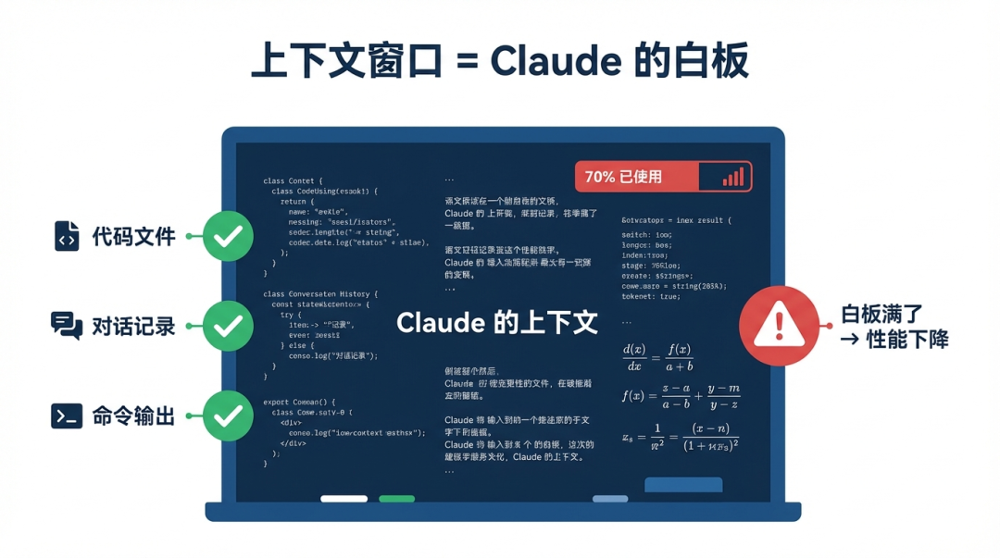
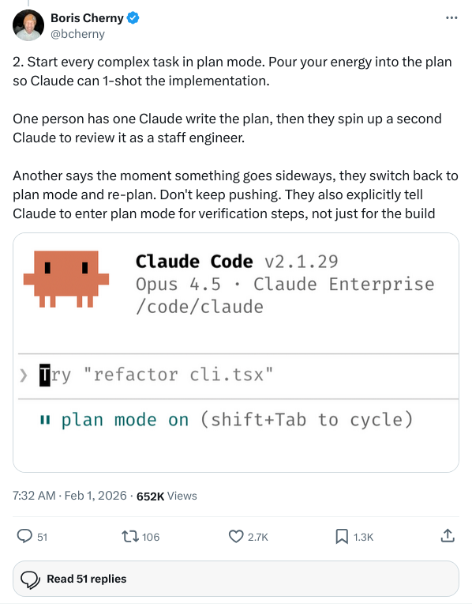
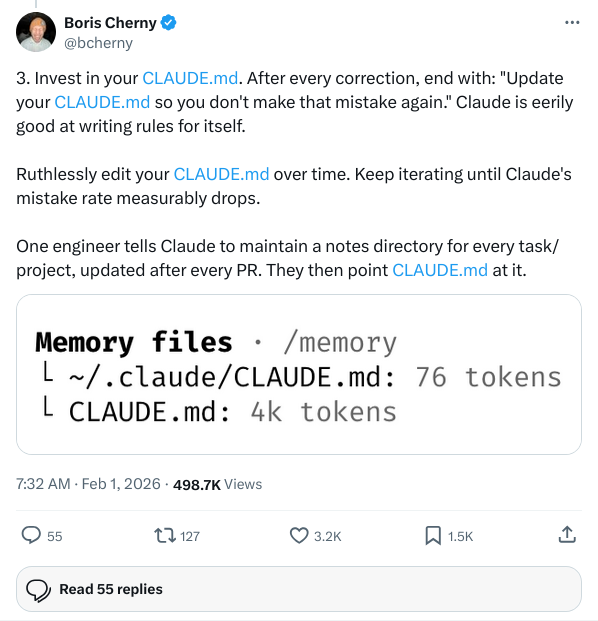
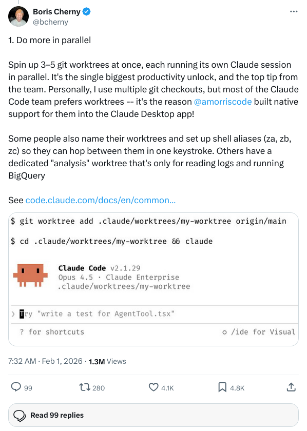
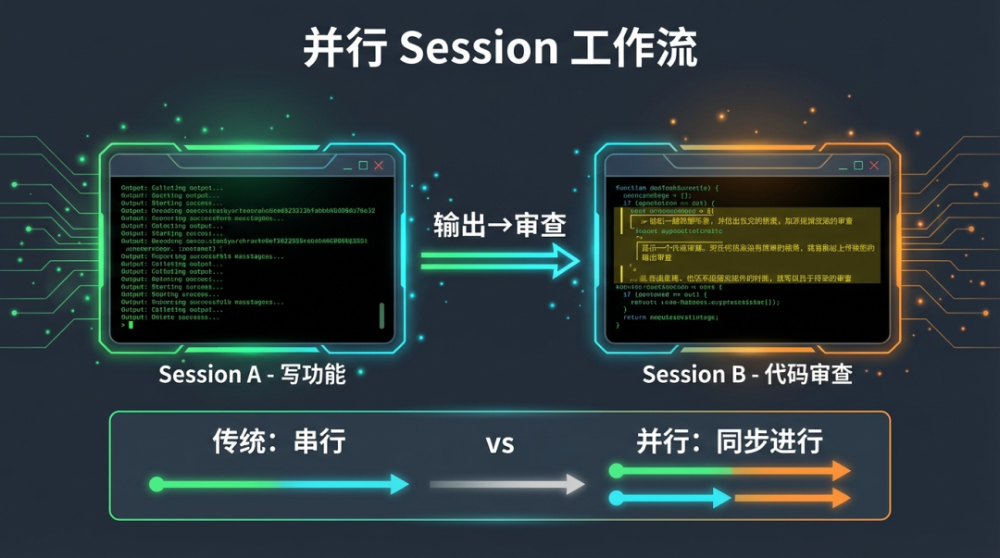
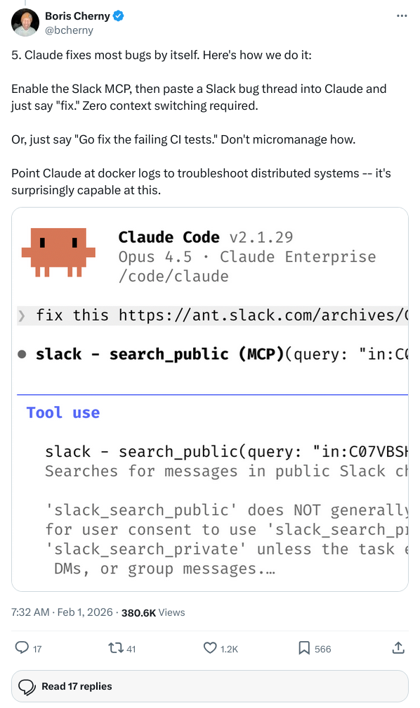
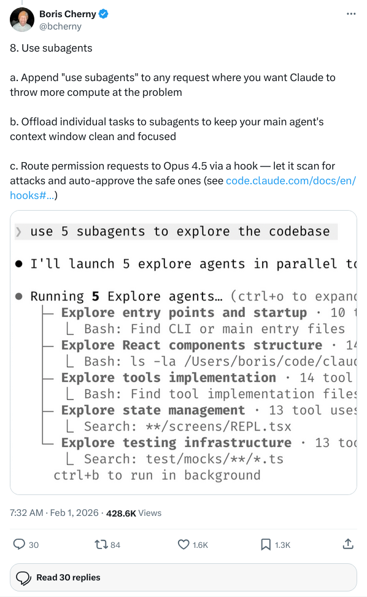
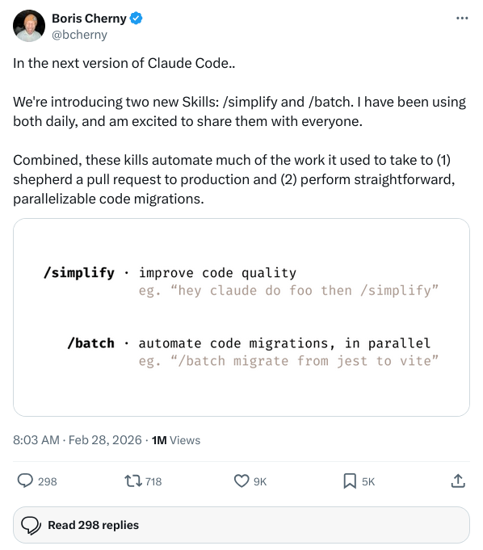

⭐ 设为星标 · 第一时间收到推送
本文整合了 Claude Code 之父 Boris Cherny 的内部团队实践 + 官方最佳实践文档，10 条拿来就能用的技巧。
一切的根本：上下文窗口是你最贵的资源
在讲任何技巧之前，你得先理解这个：Claude 有个上下文窗口，相当于一块有限的白板。
你发的每条消息、Claude 读的每个文件、运行的每条命令，都会写到这块白板上。白板越来越满，Claude 的表现就越来越差——它会忘记早期的指令，开始出错，开始变笨。
后面所有的技巧，本质上都是在帮你把白板用得更高效。

技巧一：让 Claude 自己验证自己的工作
这是单一最高收益的改变。
大部分人的用法：描述需求 → 等 Claude 输出 → 自己检查有没有 bug。结果就是你成了唯一的质检员，每个错误都得你来抓。
Boris 团队的做法：把验证标准直接写进 prompt。
比如让 Claude 写一个邮箱校验函数，不要只说"写一个邮件校验函数"，而是说：
💡 PROMPT
写一个验证邮箱的函数。测试用例：hello@gmail.com 应该通过，hello@ 应该失败，@domain.com 应该失败。写完后跑一遍测试告诉我结果。
有了具体的验收标准，Claude 就能自主检查自己的输出，省去你一大半的人工审查。
官方文档中也有个更进一步的玩法：给 Claude 截一张设计稿图，让它"实现这个设计，然后截图对比原稿，列出差异并修复"。这就是给 AI 装了个自动纠错回路。
技巧二：先规划，再动手
这个坑踩过的人都懂。你描述了需求，Claude 直接开写，15 分钟后你发现它解决的是另一个问题。
Claude Code 有个 Plan Mode（规划模式）。在这个模式下，Claude 只读文件、只理清脉络，不动一行代码。
Boris 团队的标准流程：
- 1进入 Plan Mode，让 Claude 读相关文件，摸清项目结构
- 2让 Claude 写出完整的执行计划：哪些文件要改、改动顺序、可能踩的坑
- 3你自己读一遍计划，有问题直接改
- 4切回普通模式，按计划执行
- 5执行完让 Claude 写清晰的 commit message
其中有人更极端：一个 Claude 写计划，再起一个 Claude 以高级工程师的身份审这个计划。计划过了才开始写代码。

先花 10 分钟在计划上，省下后面 2 小时的返工。
技巧三：CLAUDE.md 是你最被低估的工具
如果你每天用 Claude Code，还没建 CLAUDE.md 文件，你就是在白白浪费大量时间重复自己。
CLAUDE.md 是 Claude 每次启动都会读的文件，放在项目根目录里。你写进去的规则，Claude 每次都会遵守，不用再一遍遍重申。
比如这些常见但每次都要重复说的事：
- 只用 ES modules，不用 CommonJS
- 测试里不要用 mock
- 每次改完必须跑 linter
- 我们的分支命名规范是
feature/ticket-号
把这些写进 CLAUDE.md，一劳永逸。
Boris 团队还有个很妙的习惯：每次 Claude 犯了某个错，纠正完之后在对话末尾加一句：
💡 PROMPT
更新你的 CLAUDE.md，确保下次不再犯同样的错误。
Claude 会把新规则写进文件。下次启动，自动生效。CLAUDE.md 随着时间变成一个能不断进化的规则系统。

⚠️ 注意： 别让 CLAUDE.md 变成一个 500 行的怪兽。每一行都应该对应一个真实的错误。如果你想不出"没有这行 Claude 会犯什么错"，就删掉它。文件太长，Claude 开始忽略细节。
技巧四：并行才是真正的效率杠杆
这是 Boris 整个团队认为收益最大的改变。
Claude Code 支持多个 session 同时运行，可以用 git worktrees 在同一个项目里开多个独立工作区。团队里有人同时跑 3-5 个 session，每个做不同的任务。
一个典型的并行用法：
- Session A：写新功能
- Session B：审 Session A 写的代码，找边界情况和漏洞
- 把 B 的反馈喂给 A
一个写，一个审，代码质量比单个 session 反复修要好得多。
还有一种用法：Session A 先写测试（Test-Driven Development），Session B 再写让测试通过的代码。让 Claude 帮你把 TDD 实践起来，不用你自己跑每一步。


并行不只是速度提升，是代码质量上的本质不同。
技巧五：Bug 修复，直接扔原始数据给 Claude
很多人修 bug 的姿势是：把 bug 描述成文字，让 Claude 猜。然后 Claude 猜一遍，你纠正，再猜，再纠正。
Boris 团队的做法直接得多：把原始数据扔给 Claude，说"fix"。
他们的 Slack MCP 接上了 Claude Code。有 bug 报进来，直接把 Slack 对话贴进去，一个字："fix。" Claude 自己读报错、找代码、修 bug。
或者直接说："去修一下 CI 上失败的测试。" 不解释为什么失败，不指定哪个文件。Claude 自己追。
关键是：给 Claude 真实的信息——错误日志、Slack 线程、docker 输出——而不是你对这些信息的描述。前者让 Claude 可以自主追踪，后者让 Claude 在你的理解框架里猜。

技巧六：子智能体——让主对话保持干净
还记得那块白板吗？
当 Claude 需要深度调查一个问题时，它要读很多文件。读完之后白板已经半满了，才开始真正的工作。
子智能体（Subagents） 解决这个问题：让一个独立的 Claude 实例去做调查工作，它有自己的独立上下文。调查完了把结论汇报给你的主 session，主白板不受影响。
用法很简单，在任何调查类请求后面加一句：
💡 PROMPT
用子智能体来……（后面接具体任务）
比如："用子智能体来搞清楚我们的支付流程是怎么处理失败交易的。"
Boris 团队更进一步：他们用 Hooks + Opus 4.5 作为子智能体，自动扫描每一个权限请求，可疑的拦截，安全的自动通过。相当于给 Claude Code 装了个智能安全门卫。

技巧七：写 Skill（自定义命令），消灭重复劳动
Boris 的规则很简单：一天做了两次的事，就变成一个 skill。
Skill 是保存下来的工作流，给它一个名字，以后直接调用。
比如一个 /fix-issue 的 skill，你只需要说 /fix-issue 447，Claude 自动：
- 1读取 GitHub issue #447
- 2找到项目里相关的文件
- 3做修复
- 4写测试并运行
- 5创建 Pull Request
一个命令，零上下文切换。
Boris 团队还有人专门建了 BigQuery skill，团队里任何人都可以直接在 Claude Code 里跑数据分析，不用写一行 SQL。Boris 本人说他已经 6 个月没手写过 SQL 了。
最新发布的 /simplify 和 /batch 两个新 skill 也值得关注——前者自动并行审查 PR 并确保 CLAUDE.md 合规，后者批量处理可并行的代码迁移任务。

技巧八：提示词技巧——逼 Claude 给出更好的答案
Boris 分享了三个他团队常用的 prompt 技巧，都有点反直觉：
① 让 Claude 审你
在你提交代码之前：
💡 PROMPT
用最挑剔的方式质问这些改动，直到我通过你的测试才能开 PR。
角色倒过来，Claude 成了 reviewer，你得为自己的决策辩护。这个方法抓出的问题，比你自己 review 多得多。
② 让 Claude 重写一个更优雅的版本
Claude 第一次的方案往往取了个捷径。解决完之后说：
💡 PROMPT
你现在知道所有背景了。把这个方案推翻重来，给我一个优雅的实现。
这个时候 Claude 通常会给出比一开始更好的答案。
③ 要求 Claude 证明
别只看测试绿了就信：
💡 PROMPT
证明给我看这个改动有效。把 main 分支和我的 feature 分支的行为差异展示出来。
技巧九：用好 /clear 和 Checkpoint
当你在一个 session 里工作了很久，修了 bug、问了无关问题、聊到了另一个话题……这叫上下文污染。白板乱了，Claude 开始飘。
解法有两个：
- /clear：硬重置，清空上下文。然后用一个更清晰的 prompt 重新开始。
- /compact：软重置，告诉 Claude 保留什么，清掉其他噪音。比如
/compact 专注于支付集成的改动。
关于 Checkpoint：每次 Claude 做了改动，系统都会自动创建一个存档点。如果方向走错了，随时可以回滚——只回滚代码、只回滚对话、或者两个都回。
存档点甚至在你关了终端之后还在。明天回来，还能回滚到昨天某个状态。
建议： 如果你在 session 里对同一个问题纠正了两次，Claude 还是没改对——不要再纠正第三次了。清掉上下文，写一个更精准的起始 prompt，重头开始。
技巧十：把 Claude Code 当成学习工具
大部分人只把 Claude Code 当生产工具。Boris 团队还把它当学习工具。
进入新项目时，你可以直接问：
💡 PROMPT
这个项目的日志系统是怎么工作的？
这个函数具体在做什么，为什么要调这个方法而不是那个？
用户登录的完整流程是什么，从第一个请求到 session 建立？
这些是你原本要问老员工的问题，Claude 答得一样好，还不嫌你问。
还有两个有意思的玩法：
- 让 Claude 生成 HTML 幻灯片，把复杂代码可视化成一张张 slides。Boris 说效果出乎意料地好。
- 间隔重复学习：你向 Claude 解释你对某个模块的理解，Claude 通过追问来找出你理解的盲点，然后记下来以后反复考你。这是完整的学习工作流，完全在 Claude Code 里跑。
最后：最常见的四种失误
| 失误模式 | 症状 | 解决方法 |
|---|---|---|
| 厨房水槽 session | 话题飘到五个方向 | 切任务就 /clear |
| 纠正死循环 | 同一个错误纠正 3 次+ | 清空上下文，重写 prompt |
| CLAUDE.md 膨胀 | 规则文件 500 行 | 问自己"没这行会犯什么错"，删掉多余的 |
| 无边界调查 | Claude 读了几百个文件，上下文耗尽 | 给调查划定范围，或用子智能体隔离 |
- 用验证标准替代"希望 Claude 猜对"
- 先规划后执行，投资在计划阶段
- CLAUDE.md 自我进化，把纠正转化成规则
- 并行 sessions 是最大的效率杠杆
- 子智能体保持主对话干净
- /clear 比重复纠正更有效
- 把 Claude Code 当老工程师，不只是代码生成器
参考链接
- Claude Code 官方最佳实践文档：https://code.claude.com/docs/en/best-practices
- Boris Cherny 原始 Tips 推文线程：https://x.com/bcherny/status/2017742741636321619
— 完 —
围观朋友圈查看每日最前沿AI资讯
一键关注 👇 点亮星标
每日科技资讯和提效工具分享